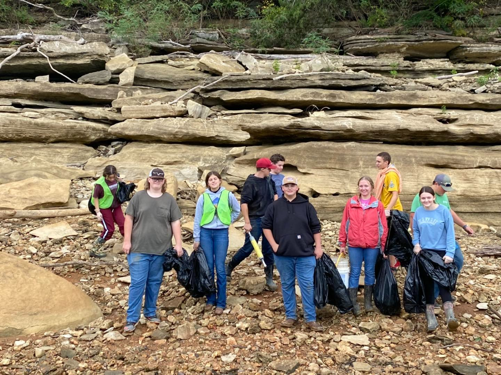

News
Lake Cumberland cleanup draws 163 volunteers
 The annual cleanup of Lake Cumberland was held Sept. 24, with 163 volunteers participating at six locations.
Volunteers filled 285 trash bags with litter they collected along the shoreline. They also removed from the lake 40 tires, two hot water heaters and two deep freezers.
The cleanup was organized by the U.S. Army Corps of Engineers, which manages Lake Cumberland, with support from Eastern Kentucky PRIDE, Inc., a nonprofit organization that promotes environmental cleanup and education across southern and eastern Kentucky.
“Communities around Lake Cumberland owe a big thanks to the volunteers who gave their time to clean the shoreline on a cool Saturday morning,” said Tammie Nazario, President/CEO of PRIDE. “The lake is so important to us ? from providing beautiful scenery that we all enjoy to attracting visitors who fuel our economies ? so these volunteers performed a great service.”
“We also want to thank the organizations that supported the event by donating necessary equipment and services” Nazario added.
The following organizations provided boats and operators to transport volunteers along the shoreline: Conley Bottom Resort, the Marina @ Rowena, State Dock Marina and Safe Harbor Grider Hill Marina.
In addition, Conley Bottom Resort waived camping fees for scouts who traveled from Ohio to volunteer for the cleanup and then stayed overnight.
Roll-off dumpsters were provided by Safe Harbor Grider Hill Marina, City of Somerset and Waste Connections.
Lake Cumberland State Resort Park and Burnside Island State Park provided access to their launch ramps and space for dumpsters.
ARC names Tammie Nazario as Appalachian Leadership Institute Fellow
The Appalachian Regional Commission (ARC) named Tammie Nazario, President and CEO of Eastern Kentucky PRIDE, Inc., and Director of The Kentucky Wildlands, to participate in the 2022-2023 class of the Appalachian Leadership Institute, a free leadership and economic development training opportunity for individuals currently living and/or working in one of ARC's 13 Appalachian states. The 2022-2023 class comprises a diverse network of professionals representing all 13 Appalachian states and a wide spectrum of perspectives and sectors, including tourism, healthcare, education, civil service, and more.
The nine-month curriculum is anchored by six multi-day seminars across the Appalachian region focusing on each of ARC's strategic investment priorities, which aim to strengthen economic and community growth in Appalachia. The fourth class will run from October 2022 through July 2023, focusing on skill-building seminars and best practice reviews to prepare fellows to:
- Design effective economic development project proposals
- Integrate community assets into long-term economic development strategies
- Identify resources available to spark economic and community development
- Locate and access investment capital from a variety of public and private sources
- Prepare competitive applications for public grant opportunities
- Use expanded connections and leadership skills to create strong regional partnerships
Appalachian Leadership Institute fellows were selected via a competitive application process to reflect the Appalachian region's wide range of economic development challenges, opportunities, and strategies.
Upon completion of the program, Nazario will automatically become part of the Appalachian Leadership Institute Alumni Network, a peer-to-peer working group of experts helping foster collaborative solutions that will build a stronger future for Appalachia.
“Ms. Nazario will be an asset to the Appalachian Leadership Institute. She is the proven leader of Eastern Kentucky PRIDE, a nonprofit that has tangibly improved the environment and economic prospects of Appalachia Kentucky. The other Fellows will gain from her real-world experience as they work together to grow our communities,” said Eastern Kentucky PRIDE Board of Directors Chairman Justin Sensabaugh, who is the Senior Manager of Operations for Kentucky American Water. To learn more about the program, visit: arc.gov/leadership. To meet the 2022-2023 class of fellows and learn more about how they are working to transform their Appalachian communities, visit: arc.gov/appalachian-leadership-institute-class/.
Donate to Eastern Kentucky Flood Relief Grants
Donations are being accepted for The Kentucky Wildlands Flood Relief Grant program to assist families impacted by the historic flooding that devasted Eastern Kentucky in late July.
The program will award up to $500 per household to cover immediate needs resulting from the floods. Grant applications will be available starting Sept. 21 at www.exploreKYwildlands.com.
The nonprofit organization Eastern Kentucky PRIDE, Inc., established the grant program. PRIDE promotes environmental cleanup and education, as well as economic development through tourism, in 42 counties. The grant program is named for PRIDE's tourism initiative, The Kentucky Wildlands.
The grant program was made possible by Torch Technologies' sizable donation to PRIDE for flood recovery and relief. Based in Huntsville, Ala., the research, development and engineering company was co-founded by Bill Roark, who grew up in Eastern Kentucky.
Forcht Broadcasting, which is headquartered in Corbin and Somerset and operates stations across Kentucky, including six stations in Eastern Kentucky, is a partner in the grant program. The radio and digital group is collecting donations through its radio stations and will match those donations up to $5,000.
“PRIDE has worked in these communities for 25 years, so our hearts were broken to see the suffering caused by the floods,” said Tammie Nazario, PRIDE President/CEO and The Kentucky Wildlands Director. “We immediately put out a call for donations and were overwhelmed by the response. We were able to deliver many supplies to the five hardest-hit counties less than a week after the floods.”
“We are setting up this grant program now because direct assistance to families is the greatest need we've seen while working with our partners in the area. People need cash to take care of immediate expenses that can't wait for insurance or FEMA assistance ? things like patching holes in roofs and walls, replacing refrigerators or making sure the kids have enough clothes for school,” she explained.
“We are grateful to Torch Technologies and Forcht Broadcasting for their generous investment in the program, and we invite others to donate so the grants can reach many families,” Nazario added.
“Forcht Broadcasting Radio and Digital is pleased to work with PRIDE and The Kentucky Wildlands and to match up to $5,000 in donations received. The people of Eastern Kentucky are our family, and we had radio stations and staff affected by the historic flooding. We are proud of the people of Eastern Kentucky for their continued resilience and strength,” said Amy Stroud, Senior Vice President of Forcht Broadcasting Radio and Digital.
“Our radio and digital group puts community first, and we have no greater communities than those in Eastern Kentucky,” said Mike Tarter, President/CEO of Forcht Broadcasting. “Serving our listeners and followers is what we do, and we can think of no better way to make flood relief donations go farther than to match up to $5,000 of donations received.”
“My wife Brenda and I grew up near the center of the flooded area,” said Bill Roark, Co-founder of Torch Technologies, CEO Starfish Holdings and Freedom Real Estate and Capitol. “I would like to offer words of comfort for families who lost loved ones and words of courage for those who are rebuilding.”
“Many of our employee owners come from rural areas, and we are keenly aware of the devastating impact of natural disasters on the people in those regions,” said John Watson, President and CEO of Torch Technologies. That's why we have supported communities in multiple states during their recovery.”
To donate digitally to The Kentucky Wildlands Flood Relief Grant Fund, please use the options below:
- PayPal to PRIDE@centertech.com
- WYKY FM Somerset - somerset106.com
- WTLO AM/FM Somerset - wtloam.com
- WWEL FM London - sam1039.com
- WANV FM London - 967wanv.com
- WFTG AM/FM London - wftgam.com
- WXKQ FM Whitesburg - 1039thebulldog.com
- WTCW AM/FM - wtcwam.com
- WSIP FM - wsipfm.com
- WSIP AM - wsipam.com
- WKLW FM - wklw.com
- WKYH AM/FM - wkyham.com
PRIDE is a 501(c)(3) nonprofit organization, so all donations are tax deductible. Receipts will be provided.
To contact the PRIDE office, please email PRIDE@centertech.com or administrator@kywildlands.com or call (toll free) 888-577-4339.
700 Bags of Trash Collected During Cumberland Falls PRIDE Spring Cleanup
When you enjoy the scenic drive to Cumberland Falls, you can thank 270 volunteers who picked up 700 bags of trash during the annual PRIDE Spring Cleanup at Cumberland Falls State Resort Park, which was held Saturday, April 30.
The bulk of the trash was collected along Hwy. 90, but volunteers also cleaned below the falls. In addition to the bags of trash, volunteers pulled out 48 tires, a freezer, a car fender liner and a plastic wading pool.
“We want to thank the volunteers who spent their morning making a difference in their community,” said Tammie Nazario, President/CEO of PRIDE, which is one of the cleanup's organizers. “It was a beautiful morning, and most volunteers came as groups, so it was a good opportunity to spend time with classmates, friends, coworkers or fellow church members.”
“I commend the leadership by McCreary County and Whitley County governments in recruiting volunteers and providing EMS, law enforcement and litter pickup services to support the event, as well as McCreary County Schools for providing the school bus that took volunteers to cleanup sites along Hwy. 90,” Nazario said.
“Congratulations to the groups that won awards for their outstanding volunteer efforts,” Nazario added. “We will present the Volunteer Cup trophy and plaques for largest community and school groups soon.”
Whitley County won the coveted Volunteer Cup, which goes to the county with the most volunteers participating. Whitley County was represented by 147 volunteers, McCreary County had 115 volunteers, and eight volunteers were from other counties.
The two largest community groups were from McCreary County. Pleasant Ridge United Baptist Church won 1st Place with 26 volunteers, and New Liberty Church was the 1st Runner Up with 16 volunteers.
Whitley County High School JROTC, which brought 31 volunteers, won 1st Place in the school category. With 17 volunteers, Corbin High School JROTC was the 1st Runner Up in that category.
The event was a partnership among PRIDE, Cumberland Falls State Resort Park, McCreary County Fiscal Court 109 Board, Whitley County Fiscal Court, US Forest Service, McCreary County Tourism, Whitley County Tourist Commission.
The Cumberland Falls Cleanup was part of the PRIDE Spring Cleanup campaign across 42 counties of southern and eastern Kentucky, which is sponsored by Outdoor Venture Corporation and Fibrotex, USA.